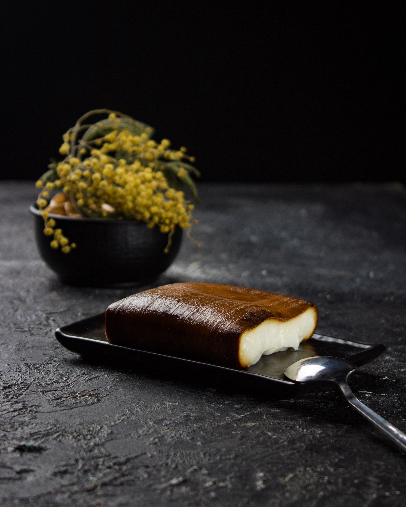

KAZANDİBİ TARİFİ

Kazandibi Hakkında Kısa Bilgi
Kazandibi, dibi tutturularak hafifçe kızartılan muhallebi.
İki çeşit kazandibi vardır. Normalde kazandibi tavukgöğsünden yapılır. Tavukgöğsü katılmamış olanına
"Muhallebi Kazandibi" adı verilir. Muhallebi Kazandibinin yapılışı aşağıdaki şekildedir.
Kaç Kişilik:4-6 Kişilik
Malzemeler
- 6 su bardağı süt
- 2 yemek kaşığı nişasta
- 1 su bardağı un
- 1 su bardağı şeker
- 1 yemek kaşığı tereyağı
- 1 paket vanilya
Yapılışı
- Öncelikle orta boy bir tencereye bütün malzemeleri alarak karıştırıyoruz.
- Muhallebi elde ediyoruz. En son tereyağını ve vanilyasını dökerek muhallebimizi 5 dk. kadar pişiriyoruz.
- Orta boy alüminyum tepsiye bolca tereyağı sürüyoruz ve 3 yemek kaşığı kadar tepsiye şeker döküyoruz.
- Her yeri eşit olmasına özen gösterin.
- Sonra pişmiş muhallebiyi tepsiye döküyoruz ve orta ateşte sürekli olarak çevirerek muhallebiyi pişiriyoruz.
- 25-30 dk. yeterli burada önemli olan tepsiyi sürekli çevirerek kontrollü pişirmek kenar kısımların da
pişmesine özen göstermek biraz dibi tutan muhallebinin kokusu biraz çıkar.
- O zaman hemen ocaktan alıyoruz ve soğumaya bırakıyoruz.
- Soğuduktan sonra 1-2 saat de buzdolabında bekletiyoruz.
- Sonra istediğimiz gibi dilimleyip servis yapabilirsiniz. Afiyet olsun.